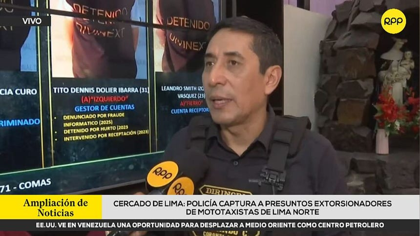

Las fuerzas del orden capturaron a cinco presuntos integrantes de 'Los Pepes del Cono Norte', una peligrosa banda de extorsionadores que operaba principalmente en el distrito de Comas, sembrando el terror entre los trabajadores del transporte menor.
La intervención policial marca un golpe significativo contra las redes criminales que se dedican al cobro de cupos en Lima Norte. La organización desarticulada no solo exigía pagos extorsivos diarios a los conductores de vehículos menores, sino que operaba bajo un esquema formalizado de intimidación que incluía el cobro de moras a quienes se demoraban en efectuar los pagos requeridos por la agrupación delictiva.
De acuerdo con las primeras indagaciones policiales, 'Los Pepes del Cono Norte' habían convertido la zona de Comas en su principal centro de operaciones. Los transportistas informales y formales de mototaxis eran obligados a pagar montos fijos bajo la amenaza constante de atentar contra sus vidas, las de sus familiares o quemar sus unidades de trabajo.
Sin embargo, un detalle que llamó la atención de las autoridades fue la modalidad empleada cuando los conductores sufrían retrasos económicos o dificultades para reunir el dinero exigido. Los extorsionadores aplicaban penalidades económicas adicionales, denominadas "moras", incrementando la deuda inicial y asfixiando aún más la economía de los trabajadores del volante.
Tras labores de inteligencia y seguimiento, personal especializado de las fuerzas del orden logró ubicar a los sospechosos en puntos estratégicos del distrito norteño. El despliegue policial permitió la captura en flagrancia de cinco sujetos presuntamente vinculados de manera directa a la red criminal.
Durante la intervención, se recopilaron elementos materiales probatorios que vincularían a los detenidos con los delitos de extorsión agravada, marcaje y reglaje a los transportistas. Las autoridades continúan con las diligencias de ley correspondientes para determinar si existen más agraviados y si la banda contaría con ramificaciones en distritos colindantes de Lima Norte.
El caso ya se encuentra en manos del Ministerio Público, entidad que formalizará la investigación preparatoria y solicitará el requerimiento de prisión preventiva contra los cinco intervenidos, mientras la ciudadanía en Comas exige mayores garantías para el desarrollo de sus actividades cotidianas frente al asedio de la delincuencia organizada.